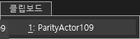
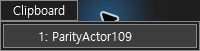
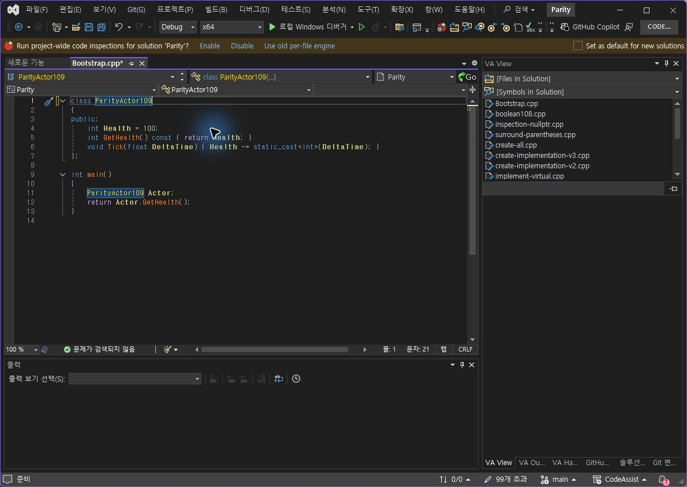
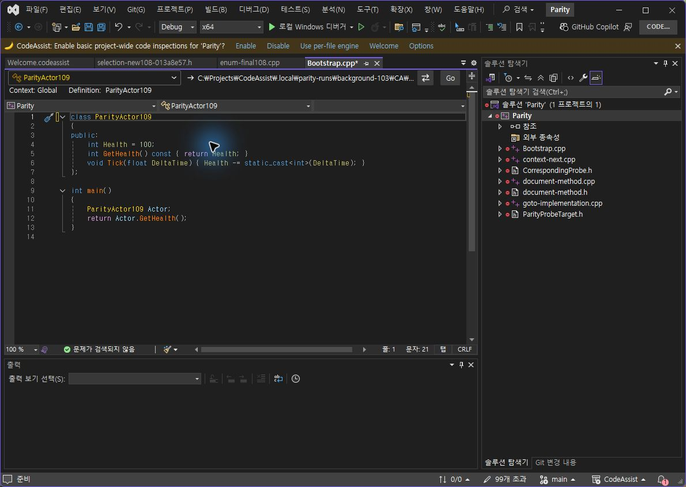

Tracefolio REPORTS & ISSUES
Tracefolio REPORTS & ISSUES0.0.107 클립보드 메뉴 직접 대조
기존 기록 이전원문에 기록된 작업 내용과 당시 검증 범위를 정리한 보관 기록입니다.
보관 기록 · 결과와 검증 범위는 원문 작성 시점을 기준으로 읽어주세요.
0.0.107 클립보드 직접 대조
0.0.107 클립보드 메뉴 직접 대조
검사 프로필 설치 바이너리 6/6 일치, VS2019·Modern 빌드 통과. 기본 아이콘 여백 제거, 작은 헤더와 목록 분리. 메뉴 폭 VA/CA 200px, 높이 VA 56px / CA 51px.
VA / CA 실제 메뉴


항목 클릭 실제 결과
같은 문자열을 선택하고 항목을 클릭한 결과, 전체 본문·최종 커서(1:21, 선택 없음)가 일치했습니다. 확정된 대조 1건. 계획한 클릭·취소 2개 중 완전한 동일 조건 대조는 1/2(50%). 전체 제품 유사도가 아닙니다.


제외한 결과
취소는 양쪽 본문 변화가 없고 문서는 clean이지만 Undo 후 시작 선택 범위가 달랐으므로 같은 조건의 통과로 계산하지 않습니다. VA Enter 입력에서는 편집기 줄바꿈이 들어갔으며 실행 취소했고 통과에서 제외했습니다. 원인은 미확인입니다.
남은 작업: 동일 선택으로 취소 재검사, 메뉴 높이 5px 및 언어 설정 차이, 라이트 테마, 누락 옵션, 전체 기능 대조. 문서 부분 명세 확보 108/108(100%)는 전체 역분석 완료율과 다릅니다.
결과·촬영 해시 · VA 클릭 본문 · CA 클릭 본문 · 제외한 Enter 결과 · 설치 검증 · 빌드
XERJ: 사용 — 메뉴·클립보드 후보 검색 후 소스·실행 확인.
원문과 편집 이력
- 원문 SHA-256:
dfb9349c585a2645143a583f48d3513c6e72ed4527d1cb35c1aee734b67e470f - 표시 날짜는 원본 파일의 수정 시각입니다. 작업 완료 시각은 원문에 있는 값을 기준으로 확인합니다.